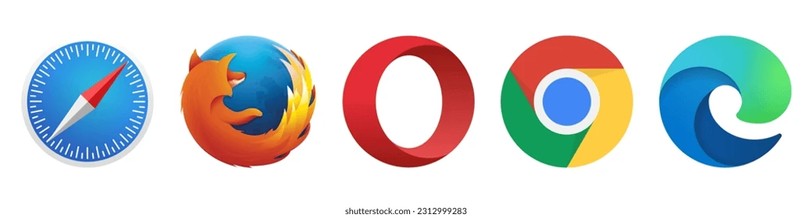
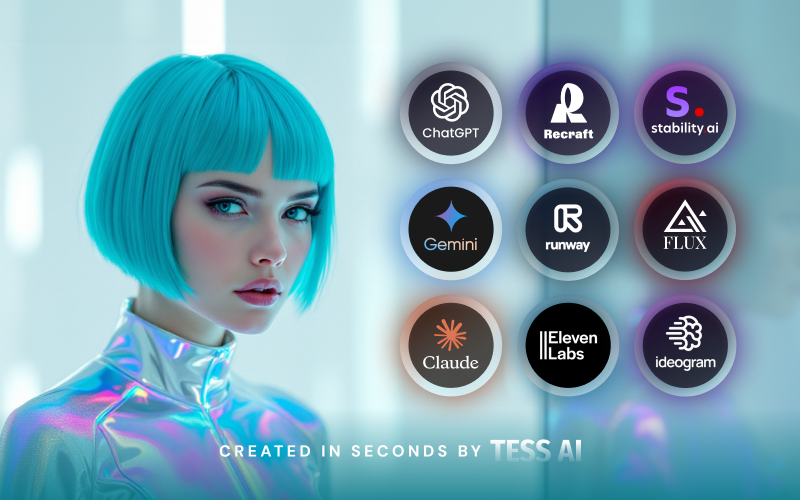

Google Chrome
Google Chrome es un buscador web desarrollado por Google. Chrome es el buscador web más popular hoy en día!

Google Chrome es un buscador web desarrollado por Google. Chrome es el buscador web más popular hoy en día!
Mozilla Firefox is an open-source web browser developed by Mozilla. Firefox has been the second most popular web browser since January, 2018.
Microsoft Edge is a web browser developed by Microsoft, released in 2015. Microsoft Edge replaced Internet Explorer.
| Navegador | Desarrollador | Motor | Cuota de Mercado |
|---|---|---|---|
| Google Chrome | Blink | 65.7% | |
| Mozilla Firefox | Mozilla | Gecko | 2.8% |
| Microsoft Edge | Microsoft | Blink | 13.1% |
| Safari | Apple | WebKit | 18.8% |
| Opera | Opera Software | Blink | 2.1% |

ChatGPT es un modelo de lenguaje desarrollado por OpenAI que puede generar texto de manera conversacional y se utiliza en numerosas aplicaciones de chatbots y asistentes virtuales.
TensorFlow es una biblioteca de código abierto para el aprendizaje automático creada por Google, ampliamente usada para entrenar y desplegar modelos de IA.
IBM Watson es una plataforma de inteligencia artificial que ofrece servicios como análisis de lenguaje natural, reconocimiento de imágenes y más para empresas.